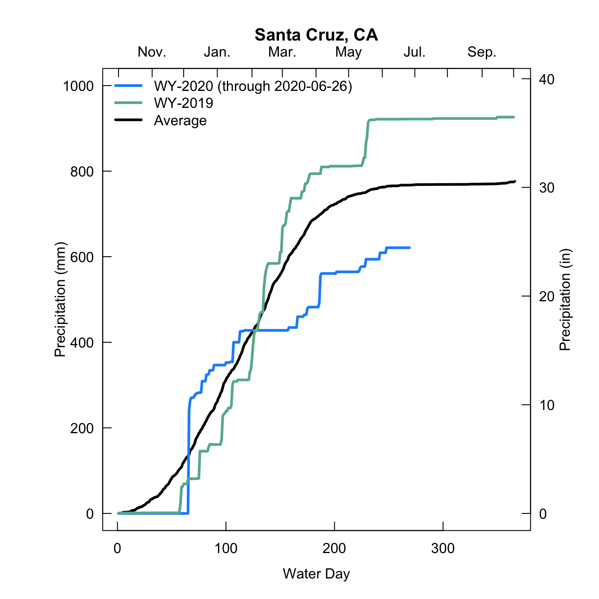
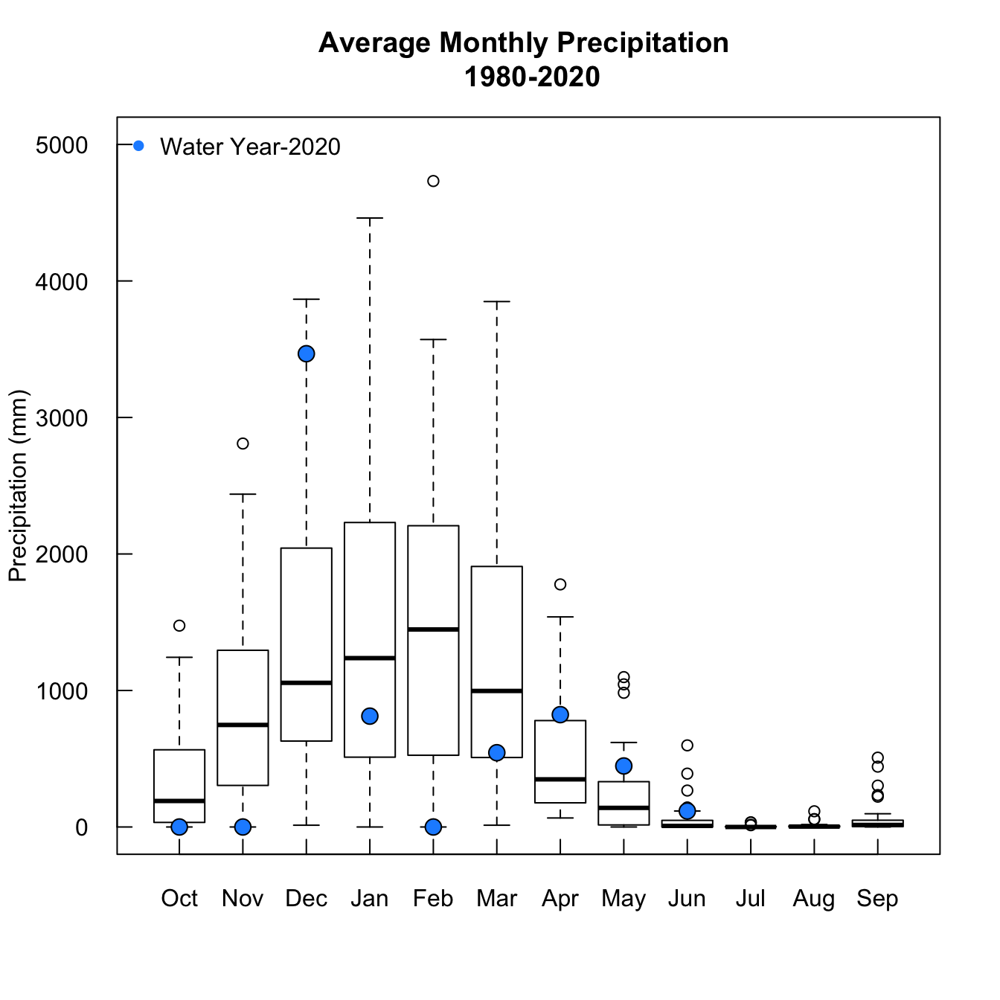

This is the code used to make the plots shown here
#install.packages('rnoaa')
library(rnoaa)
#install.packages('dplyr')
library(dplyr)
#install.packages('tidyverse')
library(tidyverse)List your sites of interest
#Sites of interest
sites <- c('USC00047916','USW00023259')
cities <- c('Santa Cruz','Monterey')
#get the current year
current.year <- format(Sys.Date(), format = '%Y')
#get the current month
current.month <- format(Sys.Date(), format = '%m')
#set the current water year
if(current.month == '10' | current.month == '11'|current.month == '12'){
current.wateryear <- as.character(as.numeric(current.year)+1)
}else{
current.wateryear <- current.year
}Use the meteo_pull_monitors fucntion from the rnoaa package to download both the historical data and the data for just water year 2020
#clear your cache, this is where the data will be stored
#meteo_clear_cache()
#pull the precip data for both sites at once for 1980 to the present day
all.stat <- meteo_pull_monitors(sites, keep_flags = FALSE, date_min = '1980-10-01', date_max = Sys.Date(), var = 'PRCP')
#pull the precip data for both sites at once for just the last water year -- sort of redundant but keeps it cleaner I think
ytd <- meteo_pull_monitors(sites, keep_flags = FALSE, date_min = '2019-10-01', date_max = Sys.Date(), var = 'PRCP')I used for loops, there are probably much more efficient ways to do this, but this worked out ok
#make two rows with one column
par(mfrow = c(2,1), mgp = c(2,0.5,0), mar = c(4,6,4,4))
#loop through the sites
for(i in 1:length(sites)){
#subset the sites
site <- all.stat %>% filter(id == unique(all.stat$id)[i])
#create a julian day column
site$jday <- format(strptime(site$date, format = '%Y-%m-%d'), format = '%j')
#convert NAs to zeros
site[which(is.na(site$prcp)),'prcp'] <- 0
#take average from 1980-2020 by day
site.jday.mean <- aggregate(site$prcp, by = list(site$jday), FUN = 'mean')
#convert julian day to water day
site.jday.mean$wday <- c(94:366,1:93)
#take the mean of each day
site.jday.mean <- site.jday.mean[order(site.jday.mean$wday),]
#now deal with the year to date data -- subset by site and date
site.ytd <- all.stat %>% filter(id == unique(all.stat$id)[i] & date > as.POSIXct('2019-10-01'))
#generate a julian day
site.ytd$jday <- format(strptime(site.ytd$date, format = '%Y-%m-%d'), format = '%j')
#convert any nas to 0
site.ytd[which(is.na(site.ytd$prcp)),'prcp'] <- 0
#now deal with water year 2019 -- subset by site and date
site.2019 <- all.stat %>% filter(id == unique(all.stat$id)[i] & date > as.POSIXct('2018-10-01') & date <= as.POSIXct('2019-10-01'))
#create a julian day
site.2019$jday <- format(strptime(site.2019$date, format = '%Y-%m-%d'), format = '%j')
#convert nas to 0
site.2019[which(is.na(site.2019$prcp)),'prcp'] <- 0
#now plot first the mean data
plot(cumsum(site.jday.mean$x)/10, main = paste0(cities[i],', CA'), typ = 'l', lwd = 3, ylim = c(0,1000), las = 1, xlab = 'Water Day', ylab = 'Precipitation (mm)', axes = F)
#then add water year 2020
lines(cumsum(site.ytd$prcp/10), col = 'dodgerblue', lwd = 3)
#then add water year 2019
lines(cumsum(site.2019$prcp/10), col = '#65B59A', lwd = 3)
#add a legend
legend('topleft', col = c('dodgerblue','#65B59A', 'black'), lty = c(1,1,1), lwd = c(3,3,3), bty = 'n', legend = c(paste('WY-2020 (through ',Sys.Date(),')',sep = ''),'WY-2019', 'Average'))
#add custom axes for fun
axis(1, labels = T, tck = 0.02)
axis(2, labels = T, tck = 0.02, las = 1)
axis(3, at = c(1,32,61,92,124,152,183,213,244,274,304,336,365),
labels = c('','Nov.','','Jan.','','Mar.','','May','','Jul.','','Sep.',''), tck = 0.02)
axis(4, at = c(0,254,508,762,1016), labels = seq(0,40,10), tck = 0.02, las = 1)
#add an axis label on the secondary y-axis
mtext(side = 4, line = 1.5, 'Precipitation (in)', cex = 1)
box()
}
I split up the records by month, to look at the data in a different way
#create a tibble for just Santa Cruz
site <- all.stat %>% filter(id == unique(all.stat$id)[1])
#make column for the month and year
site$myr <- format(strptime(site$date, format = '%Y-%m-%d'), format = '%m-%Y')
#convert nas to 0s
site[which(is.na(site$prcp)),'prcp'] <- 0
#take the mean by each year.month
site.myr.mean <- aggregate(site$prcp, by = list(site$myr), FUN = 'sum')
#split them into their own tibbles, done manually here, probably could improve with an lapply function
oct.myr <- site.myr.mean[grepl('10-',site.myr.mean$Group.1),]
nov.myr <- site.myr.mean[grepl('11-',site.myr.mean$Group.1),]
dec.myr <- site.myr.mean[grepl('12-',site.myr.mean$Group.1),]
jan.myr <- site.myr.mean[grepl('01-',site.myr.mean$Group.1),]
feb.myr <- site.myr.mean[grepl('02-',site.myr.mean$Group.1),]
mar.myr <- site.myr.mean[grepl('03-',site.myr.mean$Group.1),]
apr.myr <- site.myr.mean[grepl('04-',site.myr.mean$Group.1),]
may.myr <- site.myr.mean[grepl('05-',site.myr.mean$Group.1),]
jun.myr <- site.myr.mean[grepl('06-',site.myr.mean$Group.1),]
jul.myr <- site.myr.mean[grepl('07-',site.myr.mean$Group.1),]
aug.myr <- site.myr.mean[grepl('08-',site.myr.mean$Group.1),]
sep.myr <- site.myr.mean[grepl('09-',site.myr.mean$Group.1),]
#plot them up
par(mgp = c(3,1,0), mfrow = c(1,1))
boxplot(oct.myr$x, nov.myr$x, dec.myr$x,jan.myr$x,feb.myr$x, mar.myr$x,
apr.myr$x, may.myr$x, jun.myr$x, jul.myr$x, aug.myr$x, sep.myr$x,
names = c('October','November','December','January','February','March',
'April','May','June','July','August','September'), las = 1, axes = F,
main = 'Average Monthly Precipitation \n 1980-2020', ylim = c(0,5000), ylab = 'Precipitation (mm)',
colMed = 'lightgray',
col = 'transparent')
points(1,oct.myr[grepl(paste('-',as.numeric(current.wateryear)-1, sep = '') , oct.myr$Group.1),]$x, bg = 'dodgerblue', pch = 21, cex = 1.5)
points(2,nov.myr[grepl(paste('-',as.numeric(current.wateryear)-1, sep = '') , nov.myr$Group.1),]$x, bg = 'dodgerblue', pch = 21, cex = 1.5)
points(3,dec.myr[grepl(paste('-',as.numeric(current.wateryear)-1, sep = '') , dec.myr$Group.1),]$x, bg = 'dodgerblue', pch = 21, cex = 1.5)
points(4,jan.myr[grepl(current.wateryear, jan.myr$Group.1),]$x, bg = 'dodgerblue', pch = 21, cex = 1.5)
points(5,feb.myr[grepl(current.wateryear, feb.myr$Group.1),]$x, bg = 'dodgerblue', pch = 21, cex = 1.5)
points(6,mar.myr[grepl(current.wateryear, mar.myr$Group.1),]$x, bg = 'dodgerblue', pch = 21, cex = 1.5)
points(7,apr.myr[grepl(current.wateryear, apr.myr$Group.1),]$x, bg = 'dodgerblue', pch = 21, cex = 1.5)
# points(8,may.myr[grepl(current.wateryear, may.myr$Group.1),]$x, bg = 'dodgerblue', pch = 21, cex = 1.5)
# points(9,jun.myr[grepl(current.wateryear, jun.myr$Group.1),]$x, bg = 'dodgerblue', pch = 21, cex = 1.5)
# points(10,jul.myr[grepl(current.wateryear, jul.myr$Group.1),]$x, bg = 'dodgerblue', pch = 21, cex = 1.5)
# points(11,aug.myr[grepl(current.wateryear, aug.myr$Group.1),]$x, bg = 'dodgerblue', pch = 21, cex = 1.5)
# points(12,sep.myr[grepl(current.wateryear, sep.myr$Group.1),]$x, bg = 'dodgerblue', pch = 21, cex = 1.5)
axis(2, tck = 0.02, labels = T, las = 1)
axis(1, tck = 0.02, labels = c('Oct','Nov','Dec','Jan','Feb','Mar',
'Apr','May','Jun','Jul','Aug','Sep'), at = c(1:12))
legend('topleft', pch = 16, col = 'dodgerblue', cex = 1, legend = 'Water Year-2020', bty = 'n')
box()